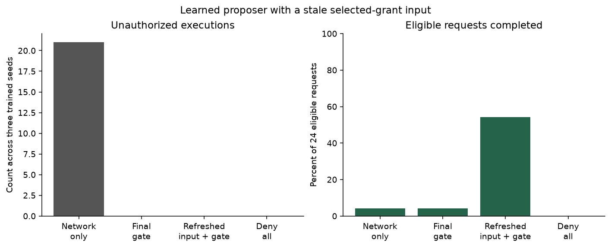
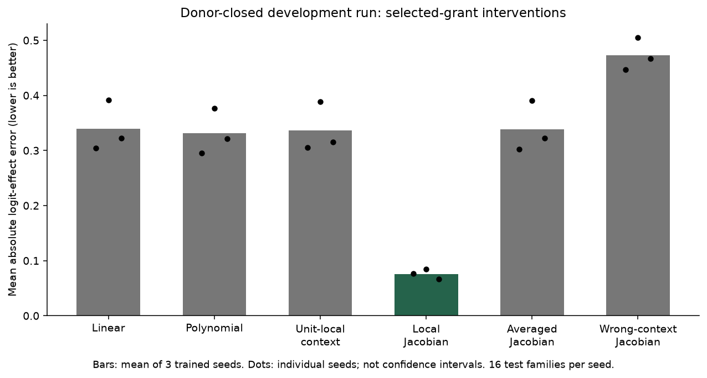

Micah Blumberg · Self Aware Networks Research Institute
Preserved earlier development lab, now included in the public companion. No uploads, API calls, external actions or browser storage. This viewer is not an LLM, a consciousness demonstration, or a production security tool. See the current release guide.
Inspect a saved, trained small network. Toggle a donor grant, patch one hidden unit, and compare the measured original-network effect with its local derivative. Removing that unit's outgoing route should erase its influence.
Worlds and weights come from dev-02. The displayed derivative uses the full downstream model and current state. Individual unit patches may be off the joint activation manifold. These exploratory controls do not modify saved models.


Paper package · Audit receipt · Formal claims and assumptions
Historical research-stage note: the first experiment's donor-exposure defect remains recorded; the second closes donor families. Later open-model experiments, the integrated Draft 10 manuscripts and reproduction evidence are linked from the current release guide. Independent scientific review remains separate.